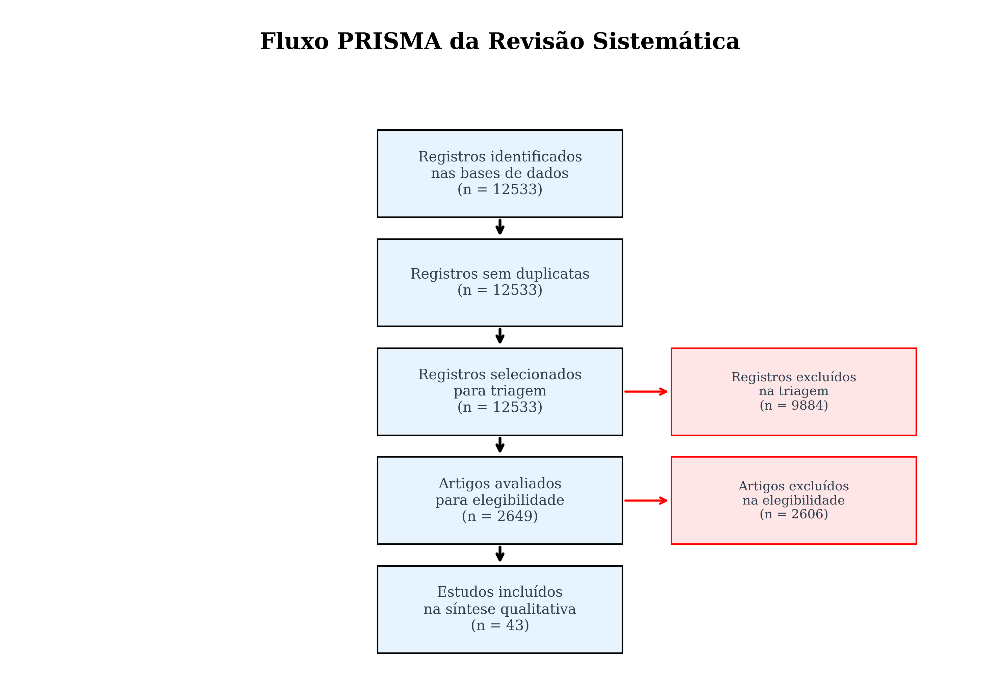
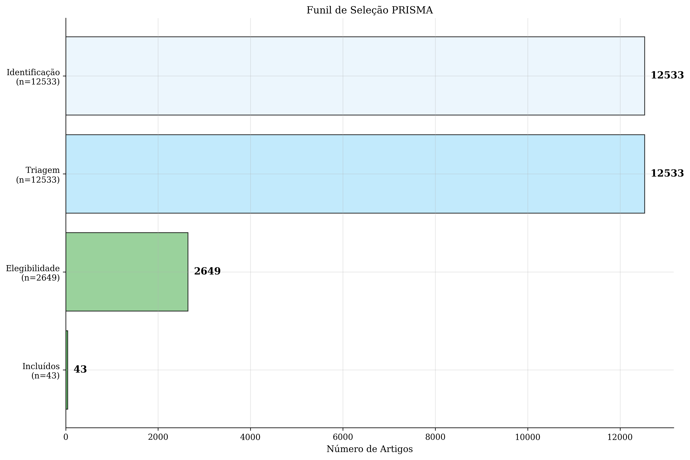

üìä Estat√≠sticas Gerais
9431
Total de Papers
17
Papers Incluídos
2015-2025
Intervalo de Anos
4
Bases de Dados
üîç Fluxo PRISMA
| Estágio | Quantidade |
|---|---|
| üìö Identifica√ß√£o | 9431 |
| üîç Triagem (aprovados) | 6914 |
| ❌ Excluídos na triagem | 5031 |
| üìñ Elegibilidade (aprovados) | 1883 |
| ❌ Excluídos na elegibilidade | 1866 |
| ✅ Incluídos (final) | 17 |
üìà Visualiza√ß√µes
Fluxo PRISMA
Funil de Seleção
Distribuição por Ano